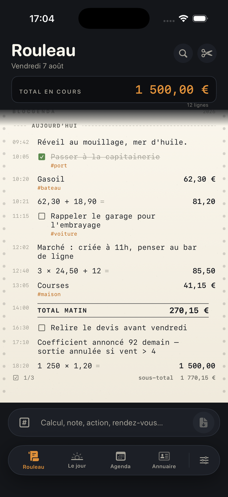
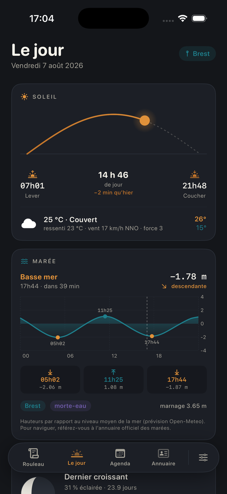
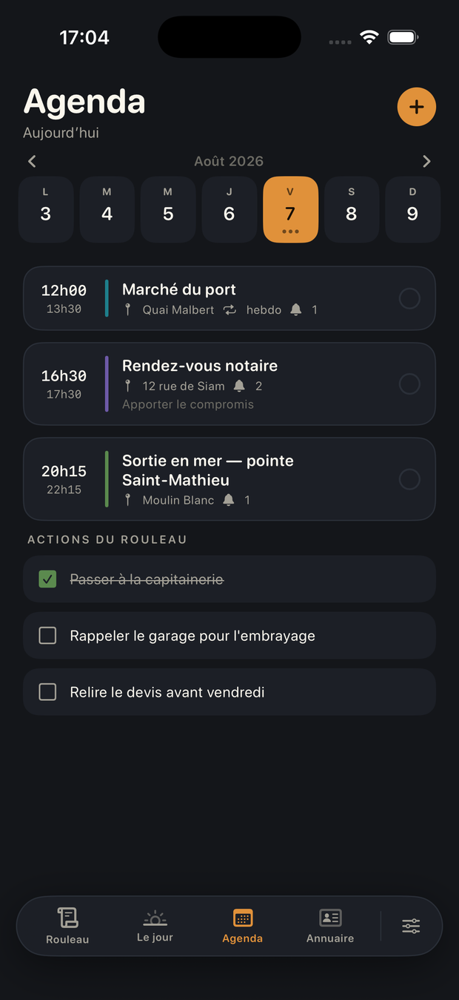
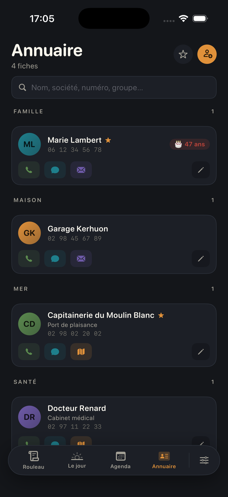

Le bloc-notes
à rouleau de papier
Une seule bande, où s’impriment dans l’ordre vos calculs, vos notes, vos actions et vos rendez-vous. Autour d’elle, ce que la journée a d’objectif : l’éphéméride, le soleil, la lune et la marée du lieu où vous êtes.
L’idée
Vous écrivez. Blocgenda comprend.
Un bloc-notes ordinaire vous force à choisir : est-ce une note, une tâche, un calcul, un rendez-vous ? Blocgenda ne demande rien. Il y a une seule barre de saisie, et l’application devine — en vous montrant ce qu’elle a compris avant que vous validiez.
| 12,50 × 3 | → | un calcul, résultat aligné à droite 37,50 |
| 200 + 10% | → | les pourcentages d’une calculatrice de bureau 220,00 |
| 20% de 80 | → | 16,00 |
| - rappeler le garage | → | une action à cocher |
| - poste demain 10h | → | une action et son rappel dans l’agenda |
| demain 14h30 dentiste | → | un rendez-vous, avec notification |
| réunion lundi 9h pendant 2h | → | un rendez-vous de deux heures |
| 12/09 8h contrôle technique | → | un rendez-vous à la date dite |
| essence 62,30 #bateau | → | une note chiffrée, étiquetée 62,30 |
En haut de la bande, l’afficheur du total en cours. En bas, le clavier
de la calculatrice quand vous en avez besoin — avec la touche TOTAL, qui
imprime un trait de sous-total et repart de zéro, comme sur une vraie caisse.
Et les ciseaux, qui déchirent la bande : les lignes terminées partent
aux archives, l’application en produit une image à envoyer, et les actions non faites
restent sur le rouleau.
Quatre écrans
Le rouleau, le jour, l’agenda, l’annuaire
Tout se tient : une action écrite sur le rouleau apparaît dans l’agenda, un anniversaire de l’annuaire remonte dans l’éphéméride, et le widget affiche la suite sans qu’on ouvre l’application.




La course du soleil
Un arc où le disque avance en temps réel. Lever, coucher, durée du jour, et l’écart avec la veille — le fameux « +3 min qu’hier ».
La marée du lieu
La courbe des vingt-quatre heures, les pleines et basses mers à la minute, le sens du courant, le marnage, vive-eau ou morte-eau. Loin de la côte, l’application bascule d’elle-même sur le port de référence le plus proche.
La lune
Phase dessinée, éclairement, âge, lever et coucher, et la date des prochaines pleine et nouvelle lunes.
L’éphéméride
Saint du jour, dicton de saison, jour n° X de l’année, semaine, jours restants, jours fériés — Pâques comprise, calculée — et « ce jour-là ».
Les anniversaires
Ceux de votre annuaire remontent chaque matin dans l’éphéméride, avec l’âge et le bouton d’appel juste à côté.
L’heure dorée
Heure dorée du matin et du soir, heure bleue, nuit noire, avec un repère « en cours » — et une alerte quinze minutes avant, pour les photographes.
Pêche & nature
Les périodes solunaires, calculées à partir du passage de la lune au méridien et de son lever, avec une note du jour sur quatre.
Widgets
Deux widgets, écran d’accueil et écran verrouillé. Sur le format moyen, la première action non faite se coche sans ouvrir l’application.
Notifications
Rappels de rendez-vous, le point du matin, le bilan du soir, l’alerte heure dorée et l’alerte marée une heure avant chaque étale.
Vie privée
Rien ne part de votre téléphone
Pas de compte, pas de nuage, pas d’analytique, pas de publicité, pas de traceur. Vos notes, votre agenda et votre annuaire restent sur l’appareil.
Lire la politique de confidentialité →
Sous le capot
Fait main, en Swift
SwiftUI et WidgetKit, sans dépendance extérieure. L’analyseur d’expressions, la reconnaissance des dates en français et les éphémérides solaires et lunaires (algorithmes de Meeus) sont écrits pour l’occasion et vérifiés par un banc de tests que l’on peut lancer sans le simulateur.
Hors ligne
Soleil, lune, saints, dictons, jours fériés et périodes de pêche : tout est calculé ou embarqué.
Partagé
Un dossier commun à l’app et au widget, et une photographie compacte de la journée que le widget lit sans réveiller l’application.
Ouvert
Le code est lisible sur GitHub. Les liens blocgenda:// permettent d’ouvrir n’importe quel écran depuis Raccourcis.